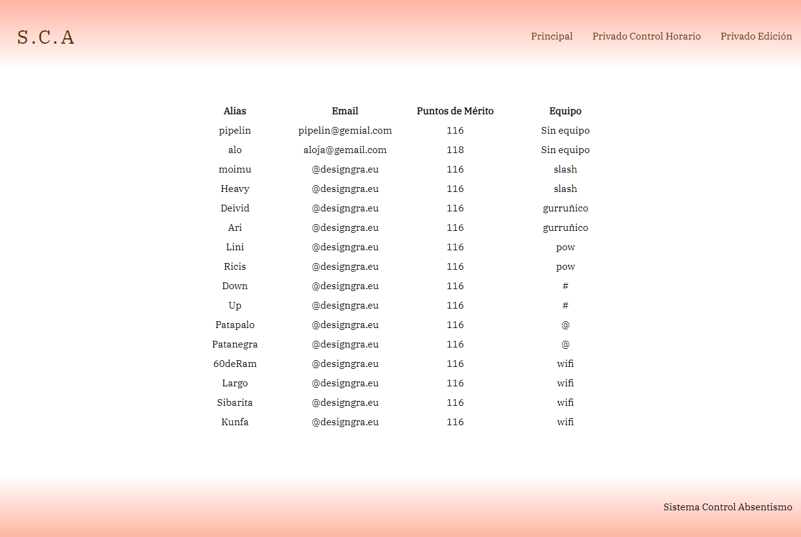
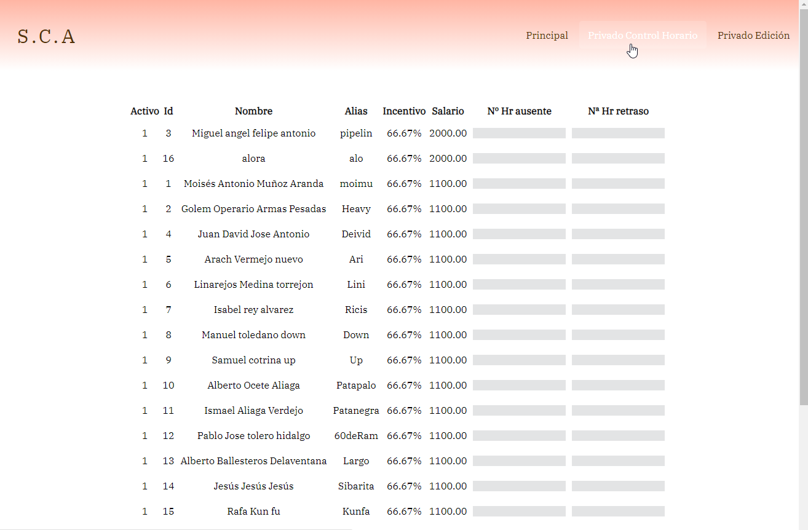
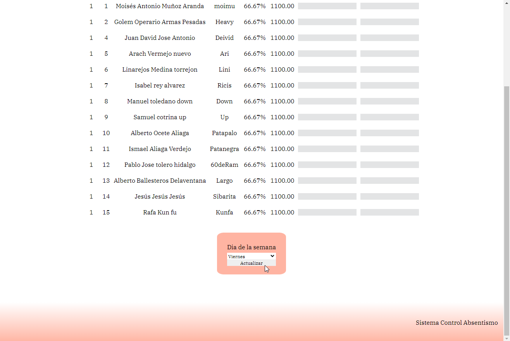
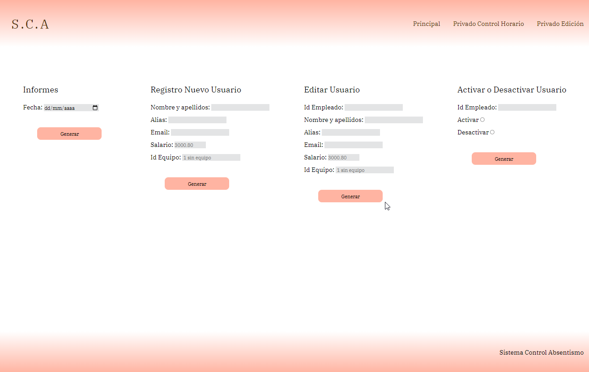

Proyecto S. Control Absentismo
Resumen público de todos los datos del personal. Cada empleado es identificado por un Alias por cuestiones de privacidad.
Parte Privada diseñada para recoger datos del absentismo de cada empleado.
Selección del dia de ingreso de los datos, pues se realizan verificaciones previas.
Parte privada que permite generar informes a fecha concreta del estado del personal además de la gestión de los empleados en la aplicación